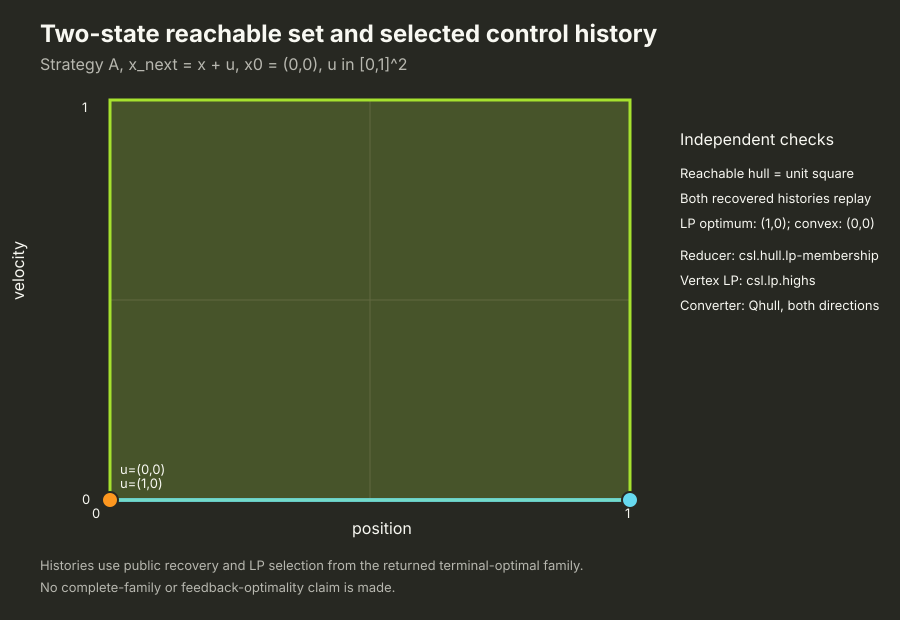
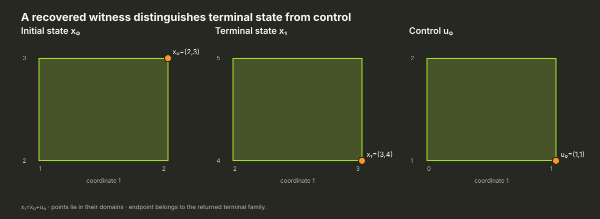

Saved numerical example · issue #944 · source commit 5a4730c517a8
Run every admitted Strategy A choice through one small control task
This publication records one-step nominal open-loop candidate-family construction in the public Strategy A pipeline. It exercises admitted reducer, vertex-LP, converter, terminal optimizer and witness-recovery roles. It is not completed feedback/MPC work, a full-family proof, or a global optimality claim.
Declared task
One transition with x₁ = A x₀ + B u₀:
A = [[1, 0], [0, 1]] B = [[1, 0], [0, 1]] c = [0, 0]
x₀ = [0, 0] X₀ = [−1,1] × [−1,1] U = [0,1] × [0,1] X₁ = [0,1] × [0,1]
linear terminal: c = [−1,0], constant = 0; quadratic terminal: H = [[2,0],[0,2]], center = [0,0], constant = 0
The optimizer's recovered history is stored in the result record and independently replayed by the checker.

Full admitted-choice accounting
- 62 completed
- 2 numeric-refusal
- 64 structural-contract-exclusion
The 64 exclusions are Phase-I profiles paired with nonzero terminal objectives, which the declared contracts disallow. Of 64 admitted attempts, 62 completed and 2 reached value-level numeric refusal. The refusals are retained attempts, not structural incompatibilities.
Download all 128 tuples with provider roles and statuses (CSV) · Download complete raw execution record (JSON)
| Reducer | Vertex LP | Terminal optimizer | Attempts | Complete | Numeric refusal |
|---|---|---|---|---|---|
| csl.hull.grouped-membership | csl.lp.highs | csl.convex.highs | 1 | 1 | 0 |
| csl.hull.grouped-membership | csl.lp.highs | csl.lp.highs | 3 | 1 | 0 |
| csl.hull.grouped-membership | phase-one-bland | csl.convex.highs | 1 | 1 | 0 |
| csl.hull.grouped-membership | phase-one-bland | csl.lp.highs | 3 | 1 | 0 |
| csl.hull.grouped-membership | phase-one-priority-tie | csl.convex.highs | 1 | 1 | 0 |
| csl.hull.grouped-membership | phase-one-priority-tie | csl.lp.highs | 3 | 1 | 0 |
| csl.hull.itis17.a43-artificial-basis | csl.lp.highs | csl.convex.highs | 1 | 1 | 0 |
| csl.hull.itis17.a43-artificial-basis | csl.lp.highs | csl.lp.highs | 3 | 1 | 0 |
| csl.hull.itis17.a43-artificial-basis | phase-one-bland | csl.convex.highs | 1 | 1 | 0 |
| csl.hull.itis17.a43-artificial-basis | phase-one-bland | csl.lp.highs | 3 | 1 | 0 |
| csl.hull.itis17.a43-artificial-basis | phase-one-priority-tie | csl.convex.highs | 1 | 1 | 0 |
| csl.hull.itis17.a43-artificial-basis | phase-one-priority-tie | csl.lp.highs | 3 | 1 | 0 |
| csl.hull.itis17.a43-certified-basis-reuse | csl.lp.highs | csl.convex.highs | 1 | 1 | 0 |
| csl.hull.itis17.a43-certified-basis-reuse | csl.lp.highs | csl.lp.highs | 3 | 1 | 0 |
| csl.hull.itis17.a43-certified-basis-reuse | phase-one-bland | csl.convex.highs | 1 | 1 | 0 |
| csl.hull.itis17.a43-certified-basis-reuse | phase-one-bland | csl.lp.highs | 3 | 1 | 0 |
| csl.hull.itis17.a43-certified-basis-reuse | phase-one-priority-tie | csl.convex.highs | 1 | 1 | 0 |
| csl.hull.itis17.a43-certified-basis-reuse | phase-one-priority-tie | csl.lp.highs | 3 | 1 | 0 |
| csl.hull.itis17.a43-largest-norm-tie | csl.lp.highs | csl.convex.highs | 1 | 1 | 0 |
| csl.hull.itis17.a43-largest-norm-tie | csl.lp.highs | csl.lp.highs | 3 | 1 | 0 |
| csl.hull.itis17.a43-largest-norm-tie | phase-one-bland | csl.convex.highs | 1 | 1 | 0 |
| csl.hull.itis17.a43-largest-norm-tie | phase-one-bland | csl.lp.highs | 3 | 1 | 0 |
| csl.hull.itis17.a43-largest-norm-tie | phase-one-priority-tie | csl.convex.highs | 1 | 1 | 0 |
| csl.hull.itis17.a43-largest-norm-tie | phase-one-priority-tie | csl.lp.highs | 3 | 1 | 0 |
| csl.hull.itis17.a44-incremental-lp | csl.lp.highs | csl.convex.highs | 1 | 1 | 0 |
| csl.hull.itis17.a44-incremental-lp | csl.lp.highs | csl.lp.highs | 3 | 1 | 0 |
| csl.hull.itis17.a44-incremental-lp | phase-one-bland | csl.convex.highs | 1 | 1 | 0 |
| csl.hull.itis17.a44-incremental-lp | phase-one-bland | csl.lp.highs | 3 | 1 | 0 |
| csl.hull.itis17.a44-incremental-lp | phase-one-priority-tie | csl.convex.highs | 1 | 1 | 0 |
| csl.hull.itis17.a44-incremental-lp | phase-one-priority-tie | csl.lp.highs | 3 | 1 | 0 |
| csl.hull.itis17.a44-paper-farthest-incremental-lp | csl.lp.highs | csl.convex.highs | 1 | 1 | 0 |
| csl.hull.itis17.a44-paper-farthest-incremental-lp | csl.lp.highs | csl.lp.highs | 3 | 1 | 0 |
| csl.hull.itis17.a44-paper-farthest-incremental-lp | phase-one-bland | csl.convex.highs | 1 | 1 | 0 |
| csl.hull.itis17.a44-paper-farthest-incremental-lp | phase-one-bland | csl.lp.highs | 3 | 1 | 0 |
| csl.hull.itis17.a44-paper-farthest-incremental-lp | phase-one-priority-tie | csl.convex.highs | 1 | 1 | 0 |
| csl.hull.itis17.a44-paper-farthest-incremental-lp | phase-one-priority-tie | csl.lp.highs | 3 | 1 | 0 |
| csl.hull.lp-membership | csl.lp.highs | csl.convex.highs | 1 | 1 | 0 |
| csl.hull.lp-membership | csl.lp.highs | csl.lp.highs | 3 | 1 | 0 |
| csl.hull.lp-membership | phase-one-bland | csl.convex.highs | 1 | 1 | 0 |
| csl.hull.lp-membership | phase-one-bland | csl.lp.highs | 3 | 1 | 0 |
| csl.hull.lp-membership | phase-one-priority-tie | csl.convex.highs | 1 | 1 | 0 |
| csl.hull.lp-membership | phase-one-priority-tie | csl.lp.highs | 3 | 1 | 0 |
| csl.hull.ordered-membership | csl.lp.highs | csl.convex.highs | 1 | 1 | 0 |
| csl.hull.ordered-membership | csl.lp.highs | csl.lp.highs | 3 | 1 | 0 |
| csl.hull.ordered-membership | phase-one-bland | csl.convex.highs | 1 | 1 | 0 |
| csl.hull.ordered-membership | phase-one-bland | csl.lp.highs | 3 | 1 | 0 |
| csl.hull.ordered-membership | phase-one-priority-tie | csl.convex.highs | 1 | 1 | 0 |
| csl.hull.ordered-membership | phase-one-priority-tie | csl.lp.highs | 3 | 1 | 0 |
| csl.hull.phase-one-basis-bulk | csl.lp.highs | csl.convex.highs | 1 | 1 | 0 |
| csl.hull.phase-one-basis-bulk | csl.lp.highs | csl.lp.highs | 3 | 1 | 0 |
| csl.hull.phase-one-basis-bulk | phase-one-bland | csl.convex.highs | 1 | 1 | 0 |
| csl.hull.phase-one-basis-bulk | phase-one-bland | csl.lp.highs | 3 | 1 | 0 |
| csl.hull.phase-one-basis-bulk | phase-one-priority-tie | csl.convex.highs | 1 | 1 | 0 |
| csl.hull.phase-one-basis-bulk | phase-one-priority-tie | csl.lp.highs | 3 | 1 | 0 |
| csl.hull.recursive-split-merge | csl.lp.highs | csl.convex.highs | 1 | 1 | 0 |
| csl.hull.recursive-split-merge | csl.lp.highs | csl.lp.highs | 3 | 1 | 0 |
| csl.hull.recursive-split-merge | phase-one-bland | csl.convex.highs | 1 | 1 | 0 |
| csl.hull.recursive-split-merge | phase-one-bland | csl.lp.highs | 3 | 1 | 0 |
| csl.hull.recursive-split-merge | phase-one-priority-tie | csl.convex.highs | 1 | 1 | 0 |
| csl.hull.recursive-split-merge | phase-one-priority-tie | csl.lp.highs | 3 | 1 | 0 |
| csl.hull.source.btulshor-kpabep | not_used | csl.convex.highs | 1 | 0 | 1 |
| csl.hull.source.btulshor-kpabep | not_used | csl.lp.highs | 3 | 0 | 1 |
| csl.hull.source.quickhull-2d | not_used | csl.convex.highs | 1 | 1 | 0 |
| csl.hull.source.quickhull-2d | not_used | csl.lp.highs | 3 | 1 | 0 |
Observed converter boundary
The faithful KPABEP provider produced ordered V input [(0,1),(1,1),(0,0),(1,0)]. Qhull returned these H rows and bounds:
H = [[1,-1.1102230246251565e-16], [0,1], [1.1102230246251565e-16,-1], [-1,0]]; b = [0.99999999999999989,1,0,0]Separate HiGHS LP and convex checks refused those matrices under the 10⁻¹² removal threshold. The exact requests and diagnostics are in the raw record and linked follow-up issue #974. Coefficients were not rounded or dropped.
Recovered-history indexing regression
This separate fixture has nonzero origin and distinct state/control domains. The returned witness is x₀=(2,3), x₁=(3,4), u₀=(1,1). Since x₁ and u₀ differ, checking the terminal family against control coordinates would fail the public membership check. The saved independent record confirms initial membership, dynamics, control bounds, endpoint membership, and returned-family recovery; it does not assert an arbitrary LP tie-break.

Reproduction and source identity
Rebuild target: csl_strategy_a_each_choice_pipeline with CMake Release, HiGHS and Qhull enabled. Run ctest --test-dir <build> -C Release --output-on-failure -R '^strategy_a_each_choice_pipeline_contract$', then run the native executable and scripts/catalogue/check_944_each_choice_pipeline.py against the emitted JSON. These are functional checks; elapsed times in the record are not performance results.
Solver source commit: 5a4730c517a875400ec7b69e4c8e2c265e49016c. The matrix and regression records below are checksummed in SHA256SUMS. Implementation source and executable hashes are retained in provenance:
{
"binary_sha256": "1c52ab404b11398b0d7ae45aaae1934047dac9a1af77840f06d56307438ee032",
"checker_sha256": "30b2ae4c28bac51c914526fa59373da3ed350176489a95dfe76b38d20fe7a6d3",
"checker_source_sha256": "30b2ae4c28bac51c914526fa59373da3ed350176489a95dfe76b38d20fe7a6d3",
"plot_renderer_sha256": "d4c24f233b5a118c90098132fb5c55b1a71daf3a36780def61d6f2dcf4871480",
"publication_renderer_sha256": "a28176bcd991568925e2afc38c2887e77ee66c6b9032f11b56ba152ca1edd584",
"records.json": "5c3bfa78199f2f75a54d23d4aca078169fd3529fb2cd730354fb60ad71b45954",
"runner_sha256": "34cdaa1a6d85902b5188797e11a31b976ebb87ce8327a6bea012aef80ae23c8a",
"runner_source_sha256": "34cdaa1a6d85902b5188797e11a31b976ebb87ce8327a6bea012aef80ae23c8a",
"shared_stylesheet_sha256": "11ded2b69cec694ff61ecad0493f175becbfc47bce3d641f2ee512543bb82cf4",
"solver_source_commit": "5a4730c517a875400ec7b69e4c8e2c265e49016c",
"terminal-membership-regression.json": "e0938f9c1cf69aba77ecc77c58c16ad1d6f12696f54fbbcf7e4023a0cbafffd7"
}Checksums · Runner and checker source commit · Related #976 Qhull follow-up and public Strategy A example